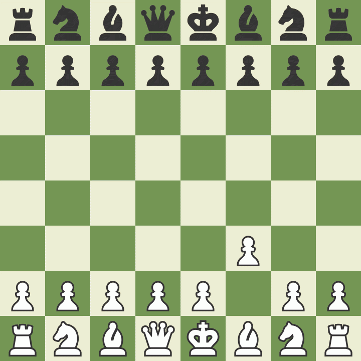

Reglas y principios del Ajedrez
Paso 1. Cómo configurar el tablero de ajedrez
Al comienzo de la partida, cada jugador debe tener una casilla blanca (o de color claro) en la parte inferior derecha del tablero.
La posición inicial de las piezas es siempre la misma. La segunda fila se encuentra ocupada por 8 peones. Las torres ocupan las esquinas, y los dos caballos se sitúan a sus lados, seguidos por los alfiles. Al lado de estos, la dama (o reina) ocupa siempre la casilla de su propio color (la dama blanca en una casilla blanca; la negra, en una casilla negra). Por último, el rey se sitúa al lado de la reina, en la casilla restante.

Paso 2. Cómo mover las piezas de ajedrez
Hay 6 tipos de piezas y cada uno tiene su propia forma de moverse. Una pieza no puede moverse atravesando a otra (aunque el caballo sí puede saltar sobre las demás) y nunca puede desplazarse a una casilla ocupada por otra pieza de su color. Sin embargo, las piezas pueden moverse a las casillas ocupadas por las piezas del adversario para capturarlas. De hecho, las piezas se mueven por el tablero para ocupar una casilla con uno de estos tres objetivos:
- capturar una pieza rival (reemplazándola al ocupar la casilla en la que esta se encontraba)
- defender a las piezas de su propio bando para evitar que sean capturadas
- o controlar las casillas importantes del tablero.
El rey es la pieza más importante, pero también una de las más débiles. El rey sólo puede avanzar una casilla en cualquier dirección: hacia arriba, hacia abajo, hacia los lados o en diagonal. En ningún caso el rey puede moverse a una casilla en la que estaría en jaque, es decir, en la que pudiera ser capturado. Recuerda que cuando el rey está directamente amenazado por otra pieza, se dice que está "en jaque".
 Cómo se mueve la Dama
Cómo se mueve la Dama
La dama (reina) es la pieza más poderosa. Puede moverse en cualquier dirección (hacia adelante, hacia atrás, hacia los lados o en diagonal) y tantas casillas como se quiera; siempre y cuando no pase por encima de una pieza de su color. Como ocurre con todas las piezas, si la dama captura una pieza rival, su movimiento ha terminado. Observa cómo la dama blanca captura a la dama negra y obliga a moverse al rey negro.
 Cómo se mueve la Torre
Cómo se mueve la Torre
La torre puede moverse tantas casillas como quiera, pero sólo hacia adelante, hacia atrás o hacia los lados. ¡Las torres son piezas especialmente poderosas cuando trabajan juntas y se protegen mutuamente!
 Cómo se mueve el Alfil
Cómo se mueve el Alfil
El alfil puede moverse tan lejos como quiera, pero siempre en diagonal. Cada alfil comienza en una casilla de un color (claro u oscuro) y debe permanecer toda la partida en ese color. Los dos alfiles trabajan bien juntos porque se cubren las debilidades mutuamente.
 Cómo se mueve el Caballo
Cómo se mueve el Caballo
Los caballos se mueven de una manera muy diferente a la de las otras piezas: avanzan dos casillas en una dirección y luego una más en un ángulo de 90 grados, dibujando en su desplazamiento una letra "L" sobre el tablero. Los caballos también son las únicas piezas que pueden saltar sobre otras.
 Cómo se mueve el Peón
Cómo se mueve el Peón
Los peones tienen la particularidad de que se mueven y capturan de diferentes maneras: se mueven hacia adelante, pero capturan en diagonal. Los peones sólo pueden avanzar una casilla en cada jugada, a excepción de su primer movimiento en el que puedan avanzar dos casillas. Los peones sólo pueden capturar una casilla situada en diagonal y frente a ellos. Nunca pueden retroceder, ni siquiera para capturar una pieza. Los peones no pueden moverse si en su camino encuentran una pieza que ocupe la casilla situada directamente frente a ellos y tampoco pueden capturarla.

Reglas especiales del ajedrez
Hay unas reglas especiales de ajedrez que pueden no parecer lógicas al principio. Fueron creadas para hacer el juego más divertido e interesante.
Cómo coronar un peón en ajedrezLos peones tienen otra habilidad especial: si llegan al otro extremo del tablero pueden convertirse en cualquier otra pieza, excepto en un rey (a esta jugada se le llama coronación o promoción).
Un error común es considerar que los peones sólo pueden ser canjeados por una pieza que haya sido previamente capturada por el adversario. Pero eso no es cierto. Generalmente, un peón que corona se convierte en una dama. Solo los peones pueden promocionar.
 Cómo capturar al paso
Cómo capturar al paso
La última regla sobre los peones se llama captura "en passant", que en francés significa "al paso". Si un peón avanza dos casillas en su primer movimiento, y al hacerlo se sitúa al lado de un peón rival, este peón enemigo tiene la opción de capturar al primero ocupando la casilla que aquel hubiera ocupado si solo hubiera avanzado una casilla.
Esta jugada especial debe hacerse inmediatamente después del movimiento del primer peón, de lo contrario la opción de capturar ya no estará disponible. Observa el siguiente ejemplo para entender mejor esta extraña, pero importante regla.
 enroque
enroque
Hay otra regla especial denominada enroque. Esta jugada te permite hacer dos cosas importantes en un solo movimiento: situar al rey en una posición más segura y sacar a la torre de su esquina para ponerla en juego. En un solo turno el jugador puede mover al rey dos casillas hacia un lado y, al mismo tiempo, la torre situada en la esquina de ese lado, se coloca junto al rey en la casilla ubicada en el lado opuesto. (Ver el siguiente ejemplo). Sin embargo, para poder hacer un enroque se deben cumplir las siguientes condiciones:
- Debe ser la primera jugada de aquel rey
- Debe ser la primera jugada de aquella torre
- No puede haber ninguna pieza entre el rey y la torre
- El rey no puede estar en jaque ni pasar por una casilla amenazada
Si el enroque se hace con la torre más cercana al rey se llama enroque corto o enroque flanco de rey. Cuando el enroque se hace hacia el otro lado se denomina enroque largo o enroque flanco de dama. Independientemente del tipo de enroque, el rey solo se mueve dos casillas en esta jugada.

quién hace la primera jugada en ajedrez?
El jugador con las piezas blancas siempre es el primero en mover. Por lo tanto, antes de la partida generalmente se echa a suertes qué jugador controlará las blancas, por ejemplo, lanzando una moneda al aire o adivinando el color del peón oculto en la mano de uno de los jugadores. Las blancas realizan la primera jugada, seguida del primer movimiento de las negras, después mueven blancas de nuevo, y así sucesiva y alternativamente hasta el final de la partida. El jugador que mueve primero (blancas) tiene una pequeña ventaja porque puede llevar la iniciativa y atacar inmediatamente.
cómo ganar una partida de ajedrez?
dar jaque mateEl objetivo del juego es dar jaque mate al rey del adversario. Esto ocurre cuando el rey está en jaque y no puede salir de esa situación. Solo hay tres formas por las que un rey puede escapar de un jaque:
- moverse a una casilla segura (¡aunque no puede enrocarse!)
- bloquear el jaque interponiendo otra pieza de su propio bando
- capturar la pieza que amenaza al rey.
Si un rey no puede escapar del jaque, la partida ha terminado. Generalmente el rey no es capturado o retirado del tablero, simplemente la partida se declara finalizada.
 Cómo empatar una partidaA veces, las partidas de ajedrez terminan sin un ganador, pero en empate (denominado tablas). Hay 5 razones por las que una partida puede terminar en tablas:
- La posición llega a un punto muerto en el que es el turno de un jugador, pero su rey no está en jaque y sin embargo, no puede hacer ningún movimiento reglamentario. Esto se conoce comúnmente como "ahogado".
- Los jugadores pueden acordar Tablas y dejar de jugar
- No hay suficientes piezas en el tablero para forzar un jaque mate (ejemplo: un Rey y un Alfil contra otro Rey).
- Un jugador declara Tablas si la misma posición se repite tres veces (aunque no necesariamente tres veces seguidas).
- Se han efectuado 50 movimientos y ninguno de los jugadores ha movido un peón ni capturado una pieza.